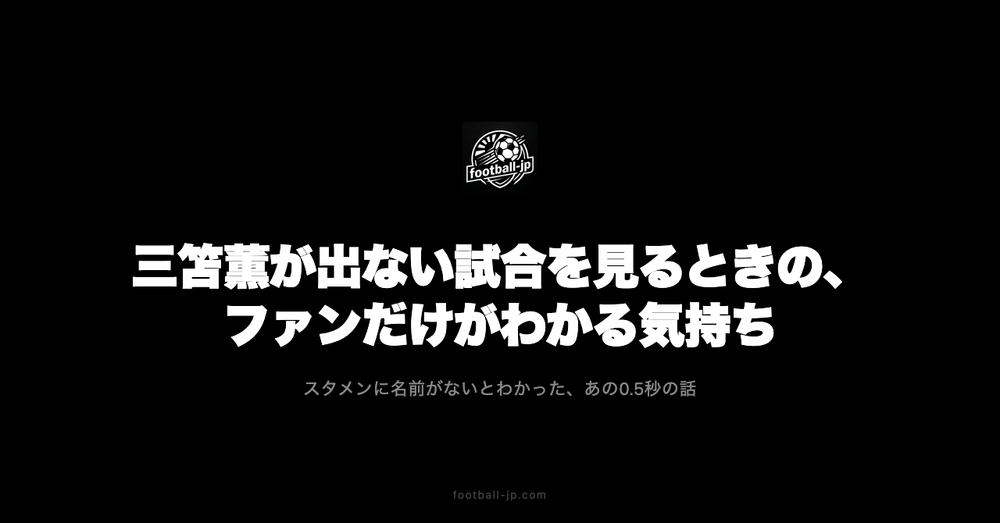

三笘薫が出ない試合を見るとき——ファンが経験する0.5秒の話
スターティングメンバーが発表された瞬間、目は左サイドのあたりを探す。「Mitoma」の文字がないとわかった瞬間、時間が0.5秒ほど止まる。その短い時間に、複数の感情が詰まっている。特定の選手を応援することで生まれる、観戦の固有の感触を記録する。

スターティングメンバー確認という儀式
ブライトンの試合前、スターティングメンバーの発表はキックオフの1時間前前後に来ることが多い。ポジション別に並んだ名前をスクロールして、左サイドのあたりに「Mitoma」という文字があるかどうかを確認する。
あった：よし。なかった：あー。
この「あー」は単純なガッカリではない。「今日はそういう日か」という受け入れ、「怪我が悪化しているのでは」という心配、「見どころは他にもある」という気持ちの切り替え——複数の感情が重なっている。
「名前を探す」という動作がどれほど習慣化しているかは、試合と関係ない場面でも確認できる。SNSで別のクラブのメンバー表の画像を見かけたとき、スクロールしながら無意識に「Mitoma」という文字を探している。条件反射に近い状態になっている。
0.5秒に詰まっているもの
名前がないとわかった0.5秒のあいだに、頭の中では小さな計算が走る。「ローテーションなら次は出るはず」「試合前練習に参加していた情報があったから軽い怪我かもしれない」「この相手ならHürzelerは3-4-3を使うかもしれないから三笘なしの方が形として安定する」——断片的な情報と予測が、一瞬でスパークして消える。
この計算が走ること自体が、「特定の選手を長く追いかけている」ことの証明でもある。名前を探す習慣、欠場時の予測の速さ、「ローテーションか怪我か」を見分けようとする判断力——これらはすべて、時間をかけて蓄積されたものだ。
「出ない試合」で変わる見方
三笘薫がいない試合は、視線の向け先が変わる。通常は左サイドに目が行くが、三笘なしの試合では最初の10分間、どこを追えばいいのか迷う感覚がある。誰かが左サイドをドリブルするたびに「三笘なら……」という脳内の比較が走る。
一方で、三笘薫がいないと「他の選手への解像度が上がる」という発見もある。普段は三笘に目が行っているから気づかなかった、ボランチの動きや右サイドバックのポジショニングが、急に見えてくる。
ブライトンで言えば、Danny Welbeckの受け方、Carlos Balebaの縦への入り方、Ferdi Kadıoğluのオーバーラップのタイミング——三笘がいる試合では「左サイドの展開に合わせた動き」として認識していたものが、三笘なしの試合では「それぞれの選手の個人戦術」として見え方が変わる。チームを立体的に見る機会として、「出ない試合」には固有の価値がある。
欠場情報を追いかける習慣
三笘薫が出場しなかった試合のあとは、その理由が気になる。ローテーションか、軽い怪我か、戦術的判断か。ベンチに入っているのか、それとも完全に離脱しているのか。
試合後の監督コメント、翌日の公式練習への参加有無——これらを確認する行動が止まらなくなる。「Mitoma not in the squad」という文字列を見た瞬間の小さな緊張感は、何度経験しても薄れない。
特に試合が続く時期——プレミアリーグ・カップ戦・代表戦が重なる時期には、怪我のリスクも上がる。スタメン外の理由が単純なローテーションなのか、それとも別の理由があるのかは、試合後の情報が出るまでわからない。この「わからない時間」が、次の試合までの期待値の調整に直結している。
football-jpの三笘薫ページを一番使っているのは、作った本人かもしれない。スターティングメンバー確認や出場状況のチェック——自分が不便に感じていた情報収集の問題を、自分で解決したページでもある。
途中出場の方が感情の振れ幅が大きい
三笘薫が後半途中から出場したとき、スタメン出場より感情の振れ幅が大きくなる傾向がある。
「出ないかと思っていた」という安堵、「ベンチスタートだからこそフレッシュな状態で勝負できる」という期待、「残り時間が限られているから仕掛けてくるはず」という緊張感——これが同時に来る。
スタメン出場は90分間のプロセスとして見るが、途中出場は「限られた時間の中で何をするか」という密度で見る。ボールに触るたびに「このボールが決定的になるかもしれない」という感覚で追いかける。スタメン出場にはない「凝縮感」が途中出場の観戦には存在する。
それでも次の試合も見る
三笘薫が出ない試合を見終わっても、次の試合も見る。「好きな選手が出ないなら見なくていい」という発想もあるが、そうはならない理由がある。
三笘薫経由でブライトンというクラブを知り、クラブ自体への愛着が生まれた。そのため三笘薫が出ていなくても、チームが勝てば嬉しい。「特定選手のファン」から「クラブのファン」へという拡張が起きている。
その広がりはさらに続く。ブライトンを応援しているうちにプレミアリーグ全体の状況が気になるようになり、同じ週に他の日本人選手が活躍していれば二重に嬉しいという感情が生まれる。football-jpで68名の海外組を追いかけるようになったきっかけも、最初は「三笘薫を追いかけるついでに」という動機からだった。一人の選手から始まったサッカーの楽しみ方が、そのまま広がっていく構造がある。
スタメン発表が「試合の楽しみ方」を決める
スタメン発表が重要な儀式になっている理由は、「今日の試合で何を楽しみにするか」の設定が、その瞬間に始まるからだ。
三笘薫がいれば——左サイドのドリブル突破、カットインからのシュート、チームとの連動が期待の中心になる。いなければ——チーム全体を見る視線が先に来て、誰が左サイドを担うのかという別の期待が生まれる。
この設定があることで、90分の試合がより面白く見られる。「三笘がいない試合でも満足できる観戦」は、事前に期待値を適切に調整できているから成立する。スタメン外の情報を事前に知ることが、結果的に観戦の質を上げる。
三笘薫がスタメン外になることは終わりではない。後半に途中出場することもある。次の試合には戻ってくることもある。怪我なら復帰してくる。出ない試合があるから、出た試合の喜びが増す。スタメン発表のあの0.5秒——その感覚がなくなることは、たぶんない。